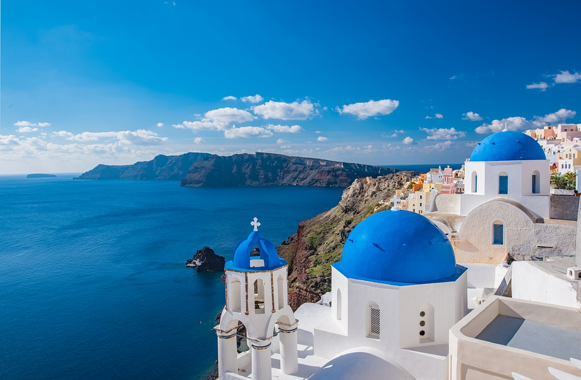

1. Climbing Mt Everest
Mt. Everest, rising 29,031.69 ft. (8,848.86 m) above sea level reigns as the highest mountain on Earth. Since the first ascent in 1953 by Edmund Hillary and Tenzing Norgay, reaching the summit of Everest has been considered one of the greatest achievements in mountaineering. Explore through the south route in Nepal

2. The Sagrada Familia in Barcelona
The Basilica of the Sagrada Familia is a monumental church devoted to the Holy Family: Jesus, Mary and Joseph. Construction began in 1882, based on plans drawn up by the architect Francisco de Paula del Villar, and Antoni Gaudi was commissioned to continue the project in 1883. The Temple has always been an expiatory church, built only from donations. As Gaudi said: "The Expiatory Church of the Sagrada Familia is made by the people and is mirrored in them. It is a work that is in the hands of God and the will of the people." In 2010, Pope Benedict XVI consecrated the site as a minor basilica

3.Ladera, St. Lucia
What's special: Jaw-dropping views of the island's iconic Pitons, the sea, and sky (with a beach more than 1,000 feet below) from rooms without a fourth wall. Be prepared for a chorus of early morning bird song and nighttime tree frog croaking. Furniture is quirky and rustic, private plunge pools haven't much wiggle-room, but the overall ambience is incredibly romantic and secluded.

4. ST REGIS BORA BORA, FRENCH POLYNESIA
Offering one of the most exclusive island accommodations in the region, this sprawling 44-acre resort matches blissful Polynesian paradise with flawless signature service. Set amidst lush unspoiled surroundings, powdery sands and sparkling turquoise-blue waters guests enjoy spectacular views the mystical Mount Otemanu, towering over the Pacific Ocean, with the remote islands of Tahaa and Raiatea on the horizon. St. Regis Resort, Bora Bora is protected by self-contained saltwater lagoons and designed to complement the surrounding landscape.
5. Santorini, Greece
If you want to visit somewhere unique, you must visit Santorini. Located in Greece, this world famous island is famous for its beautiful beaches and historical whitewashed homes. Spending a vacatiion exploring Santorini will leave you with memories to last a lifetime. This iconic island is unquestionable stunning. From its picturesque beaches to archeological beauty and sunsets, this destination is ideal for anyone. Did you also know there are rewarding volunteer opportunities in Greece where you can live on the islands and help dolphins are other marine animals!
